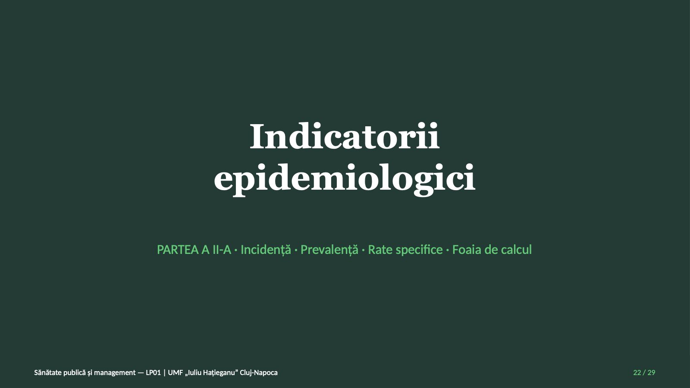

PROFILUL DE SĂNĂTATE
 1 / 29
1 / 29Ce veți ști la finalul lucrării?
![Ce veți ști la finalul lucrării? Obiectivele lucrării Descrie sursele și metodele evaluării comunitare Calculează indicatorii profilului și îi compară cu țara Calculează incidența, prevalența și ratele specifice Folosește foaia de calcul; recunoaște ratele instabile Desfășurarea lucrării A Deschidere și roluri ~10 min B Profilul județului Cluj ~40 min C Indicatori epidemiologici ~40 min D Sinteză și bilet de ieșire ~10 min Echipe de patru sau cinci studenți · roluri: calcul, verificare independentă, raportor, timp Sănătate publică și management — LP01 | UMF „Iuliu Hațieganu” Cluj-Napoca 2 / 29](diapozitive/LP01/002.jpg) 2 / 29
2 / 29Evaluarea stării de sănătate
 3 / 29
3 / 29Evaluarea, funcție de bază a agențiilor de sănătate publică
![Evaluarea, funcție de bază a agențiilor de sănătate publică Institutul de Medicină (1988) IOM a recomandat ca fiecare autoritate de sănătate publică să colecteze, să analizeze și să pună la dispoziție, regulat și sistematic, informații despre sănătatea comunității. Evaluarea este una dintre cele trei funcții de bază, alături de dezvoltarea politicilor și de asigurare. Serviciile esențiale (CDC, 2020) Primul serviciu: evaluarea și monitorizarea stării de sănătate, a factorilor care o influențează și a nevoilor și resurselor comunității. Profilul comunității: indicatori pe domenii, comparați cu țara și urmăriți în timp. Pentru asistentul medical, profilul comunității este punctul de plecare al intervențiilor comunitare. Surse: IOM (1988); CDC, serviciile esențiale (2020) Sănătate publică și management — LP01 | UMF „Iuliu Hațieganu” Cluj-Napoca 4 / 29](diapozitive/LP01/004.jpg) 4 / 29
4 / 29Metode de colectare a datelor de sănătate
 5 / 29
5 / 29Populația de referință a datelor
![Populația de referință a datelor Populația rezidentă Reședința obișnuită în România Locuire de cel puțin 12 luni Născuții vii: după reședința mamei Decedații: după ultima reședință Excepții Durata medie a vieții (INS) Calculată pe populația după domiciliu Rata șomajului înregistrat Raportată la populația activă civilă De reținut: Numărătorul și numitorul unei rate se referă la aceeași populație; valorile calculate pe baze diferite nu se compară între ele. Sănătate publică și management — LP01 | UMF „Iuliu Hațieganu” Cluj-Napoca 6 / 29](diapozitive/LP01/006.jpg) 6 / 29
6 / 29Județul Cluj
 7 / 29
7 / 29699 564
 8 / 29
8 / 29701 564
 9 / 29
9 / 294 454
 10 / 29
10 / 2978,71
 11 / 29
11 / 298,1‰
![Verificarea metodei: valorile publicate de INS pentru 2024 Natalitate 8,1‰ Județul Cluj, 2024 (POP202B) Mortalitate 11,4‰ Județul Cluj, 2024 (POP207C) Spor natural −3,3‰ Județul Cluj, 2024 (POP215B) Medicul de familie 1 437 Locuitori la un medic de familie (TCI0321) Date de intrare pentru 2024: 695 531 de locuitori, 5 623 de născuți vii, 7 913 decedați, 484 de medici de familie. Pentru 2025, INS a publicat deja mortalitatea infantilă a județului: 5,6‰. Sănătate publică și management — LP01 | UMF „Iuliu Hațieganu” Cluj-Napoca 12 / 29](diapozitive/LP01/012.jpg) 12 / 29
12 / 29Calculul indicatorilor
 13 / 29
13 / 29Formulele indicatorilor, în cuvinte
![Formulele indicatorilor, în cuvinte Indicator · Formula · La ce folosește Rata natalității · născuții vii ÷ populația de la mijlocul anului × 1 000 · Maternitate, pediatrie, vaccinare Rata mortalității generale · decedații ÷ populația de la mijlocul anului × 1 000 · Îngrijirea la sfârșitul vieții; depinde de vârstă Rata sporului natural · rata natalității − rata mortalității generale · Creșterea sau scăderea naturală a populației Rata mortalității infantile · decesele sub un an ÷ născuții vii × 1 000 · Sănătatea mamei și a copilului Surse: INS, metadatele POP202B și POP215B; Eurostat, metadatele demo_mor Sănătate publică și management — LP01 | UMF „Iuliu Hațieganu” Cluj-Napoca 14 / 29](diapozitive/LP01/014.jpg) 14 / 29
14 / 29Structura pe vârste și personalul: formule
![Structura pe vârste și personalul: formule Indicator · Formula · La ce folosește Ponderea unei grupe de vârstă · persoanele din grupă ÷ populația totală × 100 · Planificarea serviciilor pe vârste Dependența vârstnicilor · vârstnicii ÷ persoanele în vârstă de muncă × 100 · Presiunea asupra populației în vârstă de muncă Medici sau asistenți la 1 000 de locuitori · numărul lor ÷ populația de la mijlocul anului × 1 000 · Oferta de personal a populației Locuitori la un medic de familie · populația ÷ numărul medicilor de familie · Asigurarea populației cu medici de familie Surse: Eurostat, glosarul (raportul de dependență); INS, metadatele TCI0321 și SAN104A Sănătate publică și management — LP01 | UMF „Iuliu Hațieganu” Cluj-Napoca 15 / 29](diapozitive/LP01/015.jpg) 15 / 29
15 / 29Exemplu lucrat: natalitate, mortalitate, spor natural
![Exemplu lucrat: natalitate, mortalitate, spor natural ROMÂNIA, 2025 Născuți vii: 134 238 Decedați: 238 316 Populația la 1 iulie: 19 046 434 Rotunjirea: numai la sfârșit Pașii intermediari: cel puțin patru cifre semnificative Calculul 134 238 ÷ 19 046 434 = 0,007048 × 1 000 = 7,048 ≈ 7,0‰ 238 316 ÷ 19 046 434 = 0,01251 × 1 000 = 12,51 ≈ 12,5‰ Spor natural: 7,048 − 12,51 = −5,462 ≈ −5,5‰ Sursa: INS, TEMPO POP201H, POP206H, POP106A (2025) Sănătate publică și management — LP01 | UMF „Iuliu Hațieganu” Cluj-Napoca 16 / 29](diapozitive/LP01/016.jpg) 16 / 29
16 / 29Exemplu lucrat: mortalitatea infantilă și dependența vârstnicilor
![Exemplu lucrat: mortalitatea infantilă și dependența vârstnicilor ROMÂNIA Decese sub un an, 2025: 799 Născuți vii, 2025: 134 238 Vârstnici și vârstă de muncă, 1 ianuarie 2026: 3 903 242 și 12 266 941 Numitorul mortalității infantile: născuții vii Dependența: vârstnici la 100 de persoane în vârstă de muncă Calculul 799 ÷ 134 238 = 0,005952 × 1 000 = 5,952 ≈ 6,0‰ 3 903 242 ÷ 12 266 941 = 0,3182 × 100 = 31,82 ≈ 31,8 Mortalitate infantilă: 6,0‰ Dependență: 31,8 la 100 Surse: INS, TEMPO POP201H, POP208E, POP105A Sănătate publică și management — LP01 | UMF „Iuliu Hațieganu” Cluj-Napoca 17 / 29](diapozitive/LP01/017.jpg) 17 / 29
17 / 29Exemplu lucrat: personalul medical, România 2025
![Exemplu lucrat: personalul medical, România 2025 Medici la 1 000 de locuitori = medicii ÷ populația de la mijlocul anului × 1 000 Densitatea personalului 77 556 ÷ 19 046 434 = 0,004072 → 4,1 medici la 1 000 145 320 + 22 040 = 167 360 de asistenți 167 360 ÷ 19 046 434 = 0,008787 → 8,8 asistenți medicali la 1 000 Structura echipei 19 046 434 ÷ 13 227 = 1 439,97 → 1 440 de locuitori la un medic de familie 167 360 ÷ 77 556 = 2,158 → 2,2 asistenți medicali la un medic Sănătate publică și management — LP01 | UMF „Iuliu Hațieganu” Cluj-Napoca 18 / 29 Surse: INS, TEMPO SAN104A și POP106A (2025)](diapozitive/LP01/018.jpg) 18 / 29
18 / 29Prima sarcină: profilul județului Cluj
![Prima sarcină: profilul județului Cluj PAȘII Verificați metoda pe anul deja publicat Ratele ultimului an cu date complete Mortalitatea infantilă, comparată cu INS Structura pe vârste și dependența Personalul la 1 000 de locuitori și la un medic Durata medie a vieții și șomajul, preluate direct Sensul diferenței față de țară FIȘA DE EVALUARE COMUNITARĂ 1) Calculul, cu numitorul potrivit 2) Verificarea independentă a fiecărui calcul 3) Valorile județului și ale țării, cu sursa și anul Rotunjirea se face numai la sfârșit; o eroare de numitor schimbă concluzia, nu doar cifra. Sănătate publică și management — LP01 | UMF „Iuliu Hațieganu” Cluj-Napoca 19 / 29](diapozitive/LP01/019.jpg) 19 / 29
19 / 29A doua sarcină: trei constatări
![A doua sarcină: trei constatări ÎNTREBĂRI-GHID Mortalitate mai mică = risc mai mic la aceeași vârstă? Mai mulți medici = acces mai bun? Ce înseamnă mai puțini asistenți la un medic? Ce ar putea explica diferența urban–rural și ce date ar verifica explicația? Ce indicatori de morbiditate lipsesc? Ce date ar trebui căutate? FIECARE CONSTATARE 1) Indicatorul și valoarea 2) Anul și termenul de comparație 3) O limită a datelor Constatările nu afirmă cauze pe care datele nu le pot arăta. Sănătate publică și management — LP01 | UMF „Iuliu Hațieganu” Cluj-Napoca 20 / 29](diapozitive/LP01/020.jpg) 20 / 29
20 / 2977,07
![Eroare frecventă: sursele amestecate INS Durata medie a vieții, România 2024, calculată pe populația după domiciliu 77,07 ani EUROSTAT Speranța de viață la naștere, 2024, pe populația cu reședința obișnuită; UE: 81,5 ani (ep) 76,5 (e) ani 81,5 − 77,07 = 4,43 amestecă două surse; din aceeași sursă, diferența UE–România este de 5,0 ani. În 2019–2024, diferența INS–Eurostat a variat între −0,84 și 3,07 ani (valorile Eurostat ale României, estimate: e). Sănătate publică și management — LP01 | UMF „Iuliu Hațieganu” Cluj-Napoca 21 / 29 Marcaje Eurostat: e = valoare estimată; p = valoare provizorie. Surse: INS, TEMPO POP217A; Eurostat, demo_mlexpec (2024)](diapozitive/LP01/021.jpg) 21 / 29
21 / 29Indicatorii

22 / 29Rujeola și tusea convulsivă în România
![Rujeola și tusea convulsivă în România Indicator · 2023 · 2024 · Sursa Cazuri noi de rujeolă · 3 677 · 25 505 · INS, SAN109A Cazuri noi de tuse convulsivă · 17 · 2 963 · INS, SAN109A Populația rezidentă la 1 iulie · 19 065 938 · 19 059 534 · INS, POP106A Incidența la 100 000 · ? · ? · de calculat Caz nou: boala depistată pentru prima oară la medic, indiferent de data îmbolnăvirii (INS). Surse: INS, TEMPO; OMS, GHO. Sănătate publică și management — LP01 | UMF „Iuliu Hațieganu” Cluj-Napoca 23 / 29 Acoperirea vaccinală cu vaccin rujeolic, estimată de OMS și UNICEF — prima doză: 94% (2012), 83% (2022), 78% (2023), 66% (2024 și 2025); a doua doză: 90%, 71%, 62% și 68% în aceiași ani.](diapozitive/LP01/023.jpg) 23 / 29
23 / 29Exercițiile părții a doua
 24 / 29
24 / 29Prevalența și incidența într-o listă de pacienți
![Prevalența și incidența într-o listă de pacienți Valori ipotetice: boala cronică K, lista unui cabinet de medicină de familie, un an Situația · Numărul de persoane Adulți pe listă, la începutul anului · 2 000 Cu boala K, la începutul anului · 600 Cazuri noi de boală K în cursul anului · 42 Decedați cu boala K în cursul anului · 18 Vindecați de boala K în cursul anului · 0 Alte ieșiri de pe listă · 0 SARCINI 1) Prevalența de moment la început 2) Incidența, cu numitorul potrivit 3) Prevalența la sfârșitul anului 4) Ce planifică asistentul medical? 5) Date reale: prevalența infecțiilor asociate asistenței medicale (INSP, 2023) Care este numitorul potrivit al incidenței? Comparați rezultatul cu cel obținut pe întreaga listă. Sănătate publică și management — LP01 | UMF „Iuliu Hațieganu” Cluj-Napoca 25 / 29](diapozitive/LP01/025.jpg) 25 / 29
25 / 29Mortalitatea pe grupe de vârstă, 2025
![Mortalitatea pe grupe de vârstă, 2025 Grupa de vârstă · Decese, Cluj · Populația, Cluj · România: decese și populația 0–14 ani · 51 · 104 540 · 1 244 și 2 906 683 15–64 de ani · 1 326 · 456 962 · 46 887 și 12 255 543 65 de ani și peste · 6 311 · 138 062 · 190 185 și 3 884 208 Rata specifică · decese ÷ populație × 1 000 · — · exemplu: 190 185 ÷ 3 884 208 × 1 000 = 49,0‰ Suplimentar · rata ajustată: rată × pondere (ca fracție), adunate · — · ponderile din populația țării Surse: INS, TEMPO POP206K și POP106A (populația la 1 iulie 2025) Sănătate publică și management — LP01 | UMF „Iuliu Hațieganu” Cluj-Napoca 26 / 29](diapozitive/LP01/026.jpg) 26 / 29
26 / 29Foaia de calcul și numerele mici
![Foaia de calcul și numerele mici Valori ipotetice: boala M, cele șase localități ale unui județ ipotetic, un an Localitatea · Populația · Cazuri noi · Incidența la 100 000 A · 48 500 · 29 · ? B · 12 300 · 8 · ? C · 3 200 · 4 · ? D · 1 450 · 3 · ? E · 27 800 · 11 · ? F · 860 · 0 · ? PAȘII ÎN FOAIA DE CALCUL 1) Datele în coloanele A, B și C 2) În D2: =C2/B2*100000, copiată în jos 3) Ordonare descrescătoare după incidență 4) Rândul de total, calculat din sume Un singur caz în plus schimbă mult rata unei localități mici. Sănătate publică și management — LP01 | UMF „Iuliu Hațieganu” Cluj-Napoca 27 / 29](diapozitive/LP01/027.jpg) 27 / 29
27 / 29Limitele interpretării: ce nu se poate afirma
![Limitele interpretării: ce nu se poate afirma DATE LIPSĂ Incidența pe județe: SAN109A este națională Prevalența bolilor cronice pe județe Datele județene ale supravegherii De căutat: DSP Cluj, rapoartele INSP SURSE DIFERITE Ratele din 2025: publicate pe domiciliu Durata medie a vieții INS ≠ Eurostat Baze de populație și metode diferite Se compară numai valori din aceeași serie LIMITE DE INTERPRETARE Copiii de 0–14 ani: câteva zeci de decese Numerele mici: rate instabile Datele din 2024–2025 se pot revizui Mai mulți ani, înainte de concluzii Sănătate publică și management — LP01 | UMF „Iuliu Hațieganu” Cluj-Napoca 28 / 29](diapozitive/LP01/028.jpg) 28 / 29
28 / 29Sinteza și biletul de ieșire
![Sinteza și biletul de ieșire MENTIMETER — Bilet de ieșire 1) Ce indicator din profil v-a surprins cel mai mult? 2) Ce întrebare despre sănătatea județului ar cere date care au lipsit? Codul de acces Mentimeter este afișat de cadrul didactic Idei-cheie 1) Profilul: indicatori comparați cu o referință 2) Rata: numărător, numitor, perioadă, multiplicator 3) Rata brută depinde de structura pe vârste 4) Nu se compară valori din surse diferite 5) Ratele din numere mici sunt instabile 6) Constatarea: indicator, valoare, an, referință, limită Date: INS TEMPO, extrase și arhivate pentru această lucrare Urmează cursul C02: epidemiologie aplicată în nursing (II); promovarea sănătății și educația pentru sănătate. Sănătate publică și management — LP01 | UMF „Iuliu Hațieganu” Cluj-Napoca 29 / 29](diapozitive/LP01/029.jpg) 29 / 29
29 / 29Săgeți sau spațiu: navigare · O: vedere de ansamblu · N: notele prezentatorului · F: ecran complet · Esc: închidere